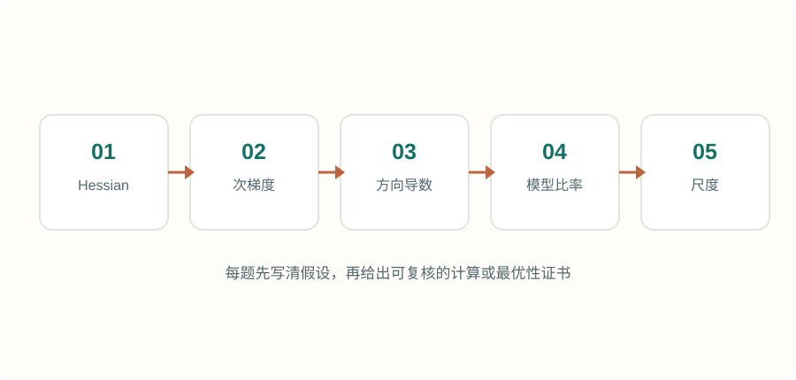

无约束优化练习：从条件到可验证答案
用五道原创小题检查驻点分类、非光滑最优性、下降方向、信赖域模型与变量缩放。每题都给出推导、数值检查和适用边界。
先写假设，再写结论
这些题目均为独立构造的教学问题，不是教材习题的复制。除非题目特别说明，变量属于实数空间，目标函数按最小化理解。每道题先给出足够的定义与数据，再要求一个可核对的结果。

题一：求驻点并证明其为全局最小
给定 f(x,y)=x²+xy+y²−4x。求驻点，并判断它是局部极小、局部极大还是鞍点。若能证明全局最优，请给出理由。
展开解答
解方程 2x+y=4、x+2y=0，得到 x*=8/3、y*=−4/3。H 的特征值为 1 和 3，故 H 正定；目标是严格凸二次函数，驻点是唯一全局最小点。代回得到 f(x*)=−16/3。
题二：L1 惩罚下的最优系数
求解 minₓ ½(x−1.5)²+0.5|x|。写出次梯度最优性条件，并判断最优系数是否为零。
展开解答
这里 y=1.5、λ=0.5。由于 y>λ，软阈值解 x*=y−λ=1。此时 x*>0，次梯度为 {1}，代入得到 x−1.5+0.5=0。
题三：判断方向是否下降
在某点梯度为 g=(2,−1)ᵀ。判断 p₁=(−1,−1)ᵀ 与 p₂=(1,2)ᵀ 是否是严格下降方向。
展开解答
gᵀp₁=2(−1)+(−1)(−1)=−1，因此 p₁ 是下降方向。gᵀp₂=2(1)+(−1)(2)=0，因此 p₂ 不是严格下降方向；一阶信息为零不代表函数沿整条射线恒定。
题四：计算信赖域模型比率
取 f(x)=eˣ，当前点 xₖ=0，二阶模型 m(p)=1+p+½p²。若信赖域半径为 0.25，采用 p=−0.25，计算实际下降、预测下降与 ρ。
展开解答
预测下降为 0.25−0.5×0.25²=0.21875。实际下降为 1−e^(−0.25)≈0.221199。故 ρ≈1.0112，大于一，说明真实目标在这一步的下降略好于二阶模型预测。
题五：用变量缩放改善条件数
给定 H=diag(25,1)，作变量变换 x=Dz，D=diag(s,1)。求使 DᵀHD=I 的正缩放 s，并计算原始条件数与缩放后条件数。
展开解答
令 25s²=1，取正值 s=0.2。原始条件数 κ₂(H)=25；变换后 Hessian 为单位矩阵，条件数为 1。
交互：选择一题查看核心答案
用滑块切换五道题的关键数值结果。完整推导仍应先独立完成，再展开每题的解答。
实时计算
每个答案对应上方同编号的题目与解析。
Python：把五个结果放进一个回归检查
代码独立计算五道题的关键结果，并用断言检查解析答案。它验证的是这些特定教学例子，不是通用的局部最优性或信赖域求解器。
"""Numerically verify five original exercises from unconstrained optimization."""
from math import exp, isclose
def soft_threshold(y: float, lam: float) -> float:
return max(-lam, min(lam, y)) * -1.0 + y if abs(y) > lam else 0.0
def exercise_results() -> dict[str, float]:
# 1) Stationary point of x^2 + xy + y^2 - 4x.
x, y = 8.0 / 3.0, -4.0 / 3.0
value = x*x + x*y + y*y - 4.0*x
# 2) L1-regularized scalar least squares, y=1.5, lambda=0.5.
sparse_solution = soft_threshold(1.5, 0.5)
# 3) Directional derivative for g=(2,-1), p=(-1,-1).
slope = 2.0*(-1.0) + (-1.0)*(-1.0)
# 4) Trust-region ratio for exp(x), x=0, p=-0.25.
predicted = 0.25 - 0.5 * 0.25**2
actual = 1.0 - exp(-0.25)
ratio = actual / predicted
# 5) Scale H=diag(100,1) by D=diag(0.1,1).
scaled_condition = max(100.0*0.1**2, 1.0) / min(100.0*0.1**2, 1.0)
return {"x": x, "y": y, "quadratic_minimum": value,
"sparse_solution": sparse_solution, "directional_slope": slope,
"trust_ratio": ratio, "scaled_condition": scaled_condition}
if __name__ == "__main__":
result = exercise_results()
for name, value in result.items():
print(f"{name}: {value:.8f}")
assert isclose(result["x"], 8.0/3.0)
assert isclose(result["y"], -4.0/3.0)
assert isclose(result["quadratic_minimum"], -16.0/3.0)
assert isclose(result["sparse_solution"], 1.0)
assert isclose(result["directional_slope"], -1.0)
assert result["trust_ratio"] > 1.0
assert isclose(result["scaled_condition"], 1.0)建议：先遮住所有解答独立推导，再运行代码。若自己的答案与程序不同，先检查变量顺序、方向导数符号、目标值与模型预测值是否混淆。